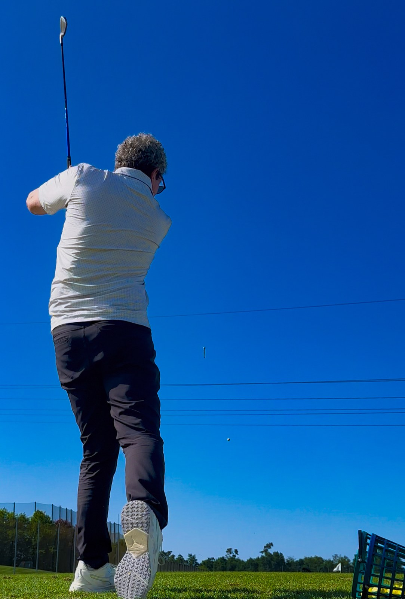
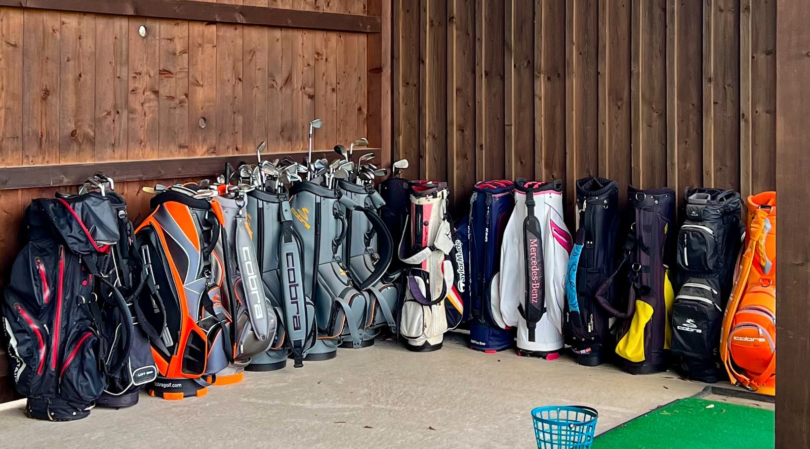
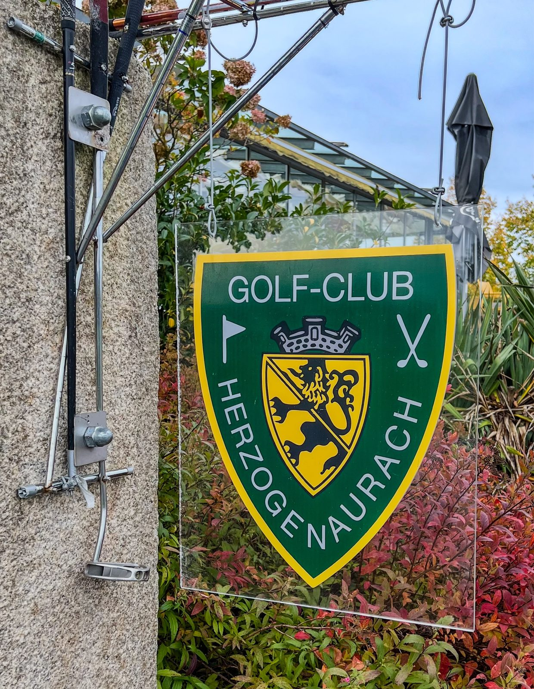
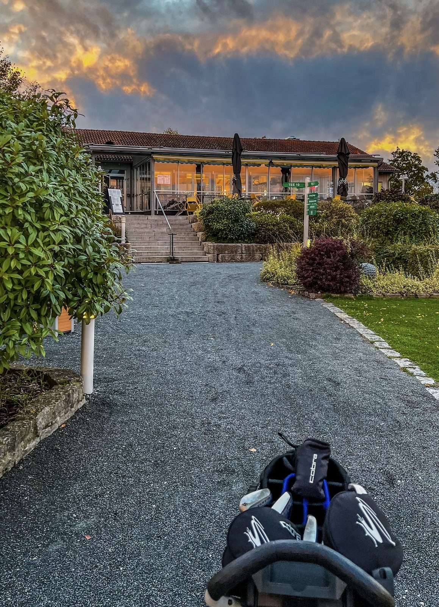
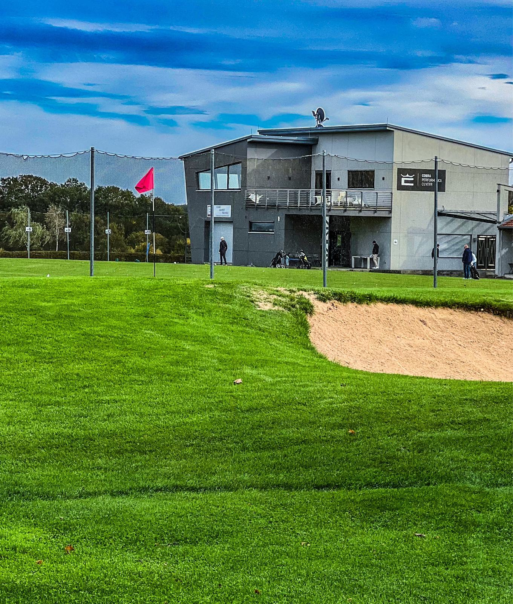
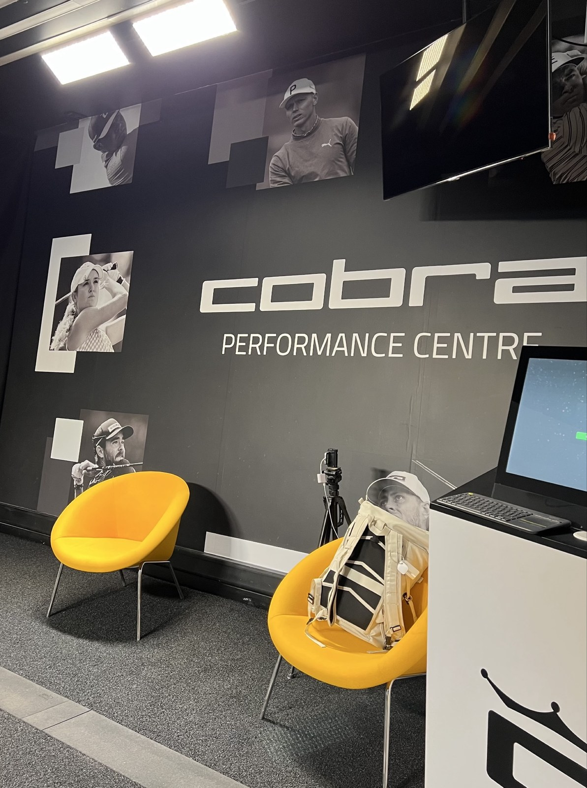
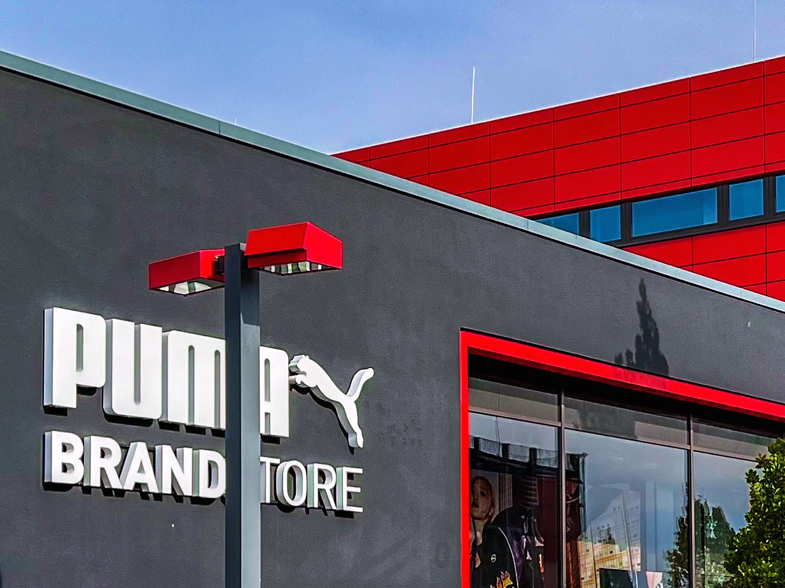
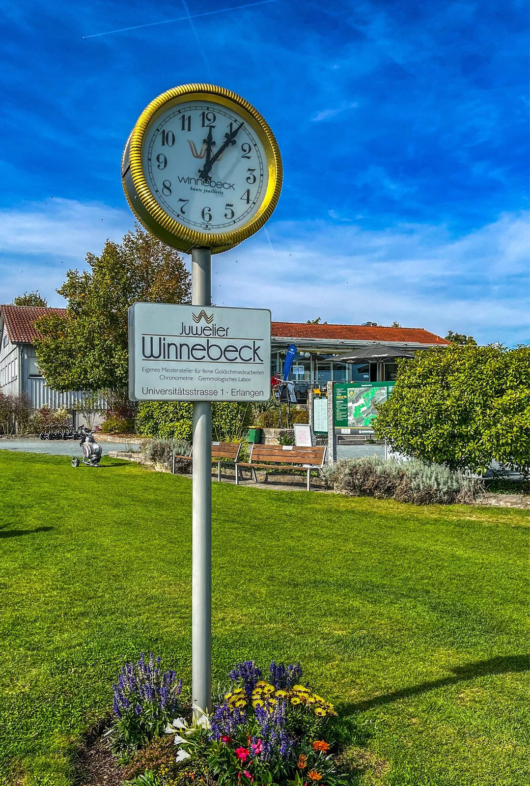

Bevor ich das erste Mal einen Golfschläger in der Hand hatte, war für mich der Golfsport schon mit einem gewissen Klischee behaftet. Dann habe ich es einfach mal probiert und festgestellt: Golf bietet optimale Entspannungsmöglichkeiten. Umgeben von Grün, ein Platz mit einer enormen Weite, dazu Ruhe: optimale Voraussetzungen, um vom Alltag abzuschalten. Der Golf-Club Herzogenaurach ist so ein Ort, an dem das passiert ist. Hier habe ich Golf gelernt. Hier habe ich meine Platzreife gemacht. Und hier stehe ich seitdem, wenn es die Zeit hergibt, bei praktisch jedem Wetter, mit einem Handicap, über das wir lieber nicht öffentlich sprechen.
Mein Pro, meine Basics
Mein Pro hieß Stewart. Geduldig, trocken im Humor. Genau diese Mischung braucht man bei einem Schüler, der anfangs den Ball öfter verfehlt als trifft. Er hat mir Griff, Stand, Ansprechposition beigebracht: die Grundlagen, die man später sofort wieder vergisst, sobald der Ball zum ersten Mal wirklich fliegt statt nur zu rollen.
Das gesamte Team am Club ist dabei absolute Spitze. Freundlich, geduldig, hilfsbereit, auch wenn ich zum wiederholten Mal den falschen Schläger aus dem Bag ziehe und trotzdem so tue, als sei das Absicht gewesen.

Craig Miller Golfschule: mega, im besten Sinn
Craig J. Miller hat seine Golfschule 1999 gegründet. Seit über 25 Jahren ist sie jetzt fest im Golf-Club Herzogenaurach beheimatet. Vier Pros unterrichten dort inzwischen. Miller selbst. Martin Hastie. Stewart Kemp, mein Pro. Lukas Exner. Ob Anfänger oder Single-Handicapper: Hier gibt es Tipps, die das eigene Spiel wirklich verbessern, nicht nur das Selbstbewusstsein kurzfristig heben.
Trainiert wird mit Video-Analyse und Computersimulation, Flightscope-Technik inklusive. Moderne Technik für einen Sport, der sich im Kern seit Jahrhunderten kaum verändert hat. Schläger schwingen, Ball suchen, alles von vorne.

Ein Verein, älter als sein heutiger Platz
Gegründet wurde der Golf-Club Herzogenaurach am 21. März 1967, von elf Golfbegeisterten, in der Gaststätte Winkelmann im Ortsteil Niederndorf. Aufnahmegebühr: 10 D-Mark. Monatsbeitrag: 1 D-Mark. Für heutige Verhältnisse ein Schnäppchen, das man sich beim Blick auf die Jahresrechnung gerne zurückwünscht.
Gespielt wurde anfangs auf einem 9-Loch-Platz mit dem schönen Namen Steel Tree Course, angelegt von amerikanischen Streitkräften auf einem ehemaligen Wehrmachtsflugplatz. Golf auf einem alten Militärflugplatz. Erst 2001 folgte der Spatenstich für die heutige Anlage im Ortsteil Burgstall, 2004 die Eröffnung mit 18 Löchern. Dort steht heute das Clubhaus, bei Sonnenuntergang meist ein wunderschönes Bildmotiv, weil der Himmel über Franken es einfach darauf anlegt.


Zwei Flussufer, eine Fehde
Herzogenaurach ist aber nicht nur mein Golf-Zuhause. Die Stadt ist auch das historische und moderne Epizentrum eines der kuriosesten Wirtschaftsduelle Deutschlands. Adidas gegen Puma, ausgetragen mitten im Ort, seit fast 80 Jahren.
1948 zerstritten sich die Brüder Adolf und Rudolf Dassler endgültig. Die gemeinsame Schuhfabrik wurde geteilt. Adolf blieb auf der einen Seite der Aurach und gründete Adidas. Rudolf zog mit seinen Leuten auf die andere Flussseite und gründete Puma. Aus einer Familienfehde wurde eine Stadtfehde, die Herzogenaurach den Beinamen „Stadt der gesenkten Blicke" eingebracht hat: Auf der Straße schaute man erst auf die Schuhe des Gegenübers, bevor man grüßte. Oder eben nicht grüßte.
Wie ernst das genommen wurde, zeigt eine Anekdote aus dem WM-Jahr 1954. Adidas sicherte sich kurz vor dem Finale den Bundestrainer, Puma schaute in diesem entscheidenden Moment in die Röhre. Ein Wettlauf um Sportler, der bis heute anhält, nur eben längst auch auf dem Golfplatz statt nur auf dem Fußballfeld.
TaylorMade und Adidas: mein eigener Golfplatz
Auch der Golfplatz des Golf-Club Herzogenaurach war Schauplatz dieses Duells. 1997 kaufte Adidas die französische Salomon-Gruppe und übernahm damit TaylorMade, den amerikanischen Marktführer bei Golfschlägern. Direkt am Golf-Club Herzogenaurach entstand daraufhin eine TaylorMade-Fitting-Station, offiziell als „Center of Excellence" geführt: Profis und ambitionierte Amateure ließen sich hier per Computeranalyse vermessen, die Schläger wurden vor Ort maßgefertigt. 2017 verkaufte Adidas TaylorMade wieder, für 425 Millionen Dollar, an die amerikanische Investmentgesellschaft KPS Capital Partners. Seitdem konzentriert sich Adidas in Herzogenaurach wieder auf das, was die Marke ursprünglich groß gemacht hat: Schuhe.
Cobra Performance Center und eine Unterschrift auf einer Kappe
Puma ging einen ganz ähnlichen Weg, nur mit einer anderen Marke. Am 10. März 2010 kaufte Puma den amerikanischen Schlägerhersteller Cobra Golf von der Acushnet Company. Aus der Fusion wurde Cobra Puma Golf, eine deutlich jüngere, poppigere Ansage im sonst eher betulichen Golfsport. Direkt am Übungsgelände des Clubs steht seitdem das Cobra Performance Center: schwarz, kantig, mit Blick über die Driving Range.
Und weil die Craig Miller Golfschule offizieller Partner von Cobra und Puma Golf ist, hängt in ihren Räumen auch das Gesicht der Marke: Rickie Fowler, seit 2009 bei Cobra Puma unter Vertrag, bekannt für seine orangefarbenen Outfits. Im oberen Stockwerk der Academy hängt seine Unterschrift, auf einer weißen Puma-Kappe mit silbernem P.


Shoppingtipp: beide Seiten der Fehde
Wer nach Herzogenaurach kommt, kann beide Marken dieser jahrzehntelangen Fehde direkt einkaufen. Der Puma Brand Store liegt keine zehn Minuten vom Golfplatz entfernt, schwarzer Beton mit roten Lichtakzenten. Das Adidas Outlet liegt gleich um die Ecke, unübersehbar an den drei grauen Balken über dem Eingang. Ich mag beide.

Das Highlight am 1. Abschlag
Am ersten Abschlag steht eine Standuhr, gestiftet vom Juwelier Winnebeck, die die offizielle Platzzeit anzeigt. Kein Handy, keine App. Ein goldener Uhrenkasten, der seit Jahren zuverlässiger tickt als mein Golfschwung. Man schaut kurz hoch, checkt die Zeit, und ab geht's auf die Runde.

Fazit: Ein Platz, eine Stadt, zwei Geschichten
Golf Club Herzogenaurach ist für mich mehr als ein Platz mit 18 Löchern. Es ist der Ort, an dem ich Golf gelernt habe, mit einem Pro, der Geduld bewiesen hat, die man selten findet. Es ist ein Verein mit Geschichte, von einem Militärflugplatz bis zum modernen Clubhaus. Der Neubau des Clubhauses soll im Mai 2027 eingeweiht werden. Und es ist mittendrin in einer Stadt, die zwei Weltmarken hervorgebracht hat und bis heute nicht ganz darüber hinweggekommen ist. Ich spiele hier sehr gern. Hier macht Golf Spaß. Selbst mit meinem Handicap.
Mein Rat? Vor dem ersten Schlägerkauf eine Schnupperstunde beim Pro-Shop buchen. So weiß man vorher, ob einem der Sport überhaupt liegt.
Häufige Fragen zum Golf-Club Herzogenaurach
Wann wurde der Golf-Club Herzogenaurach gegründet?
Am 21. März 1967, von elf Golfbegeisterten in der Gaststätte Winkelmann im Ortsteil Niederndorf. Der heutige 18-Loch-Platz im Ortsteil Burgstall kam später dazu, Spatenstich 2001, Eröffnung 2004.
Wo liegt der Golf-Club Herzogenaurach?
Im Ortsteil Burgstall bei Herzogenaurach in Franken, Adresse Burgstall 1, 91074 Herzogenaurach, auf 49.5531° N, 10.8794° O.
Wer unterrichtet an der Craig Miller Golfschule?
Vier Pros. Craig J. Miller selbst. Martin Hastie. Stewart Kemp, mein eigener Pro. Lukas Exner.
Warum liegen sich Adidas und Puma in Herzogenaurach gegenüber?
1948 zerstritten sich die Brüder Adolf und Rudolf Dassler endgültig. Die gemeinsame Schuhfabrik wurde geteilt. Adolf blieb auf der einen Seite der Aurach und gründete Adidas, Rudolf zog auf die andere Seite und gründete Puma. Seitdem sitzen beide Marken in derselben Stadt.
Quellen & Recherche
Diese Story basiert nicht nur auf eigenen Erinnerungen. Ein paar Fakten habe ich recherchiert und mit folgenden Quellen abgeglichen. Wer will, kann selbst nachlesen.
- Historie Golf-Club Herzogenaurach
- Golfschule GC Herzogenaurach
- Craig Miller Golf Academy
- Neubau Clubhaus, GC Herzogenaurach
- Die Stadt der gesenkten Blicke, fluter.de
- Rudolf Dassler, Wikipedia
- TaylorMade Ownership Timeline, greenfeed.news
- Puma Acquires Cobra Golf, offizielle Pressemitteilung
- Rickie Fowler Cobra Puma seit 2009, Yahoo Sports
- Koordinaten GC Herzogenaurach, GolfPass